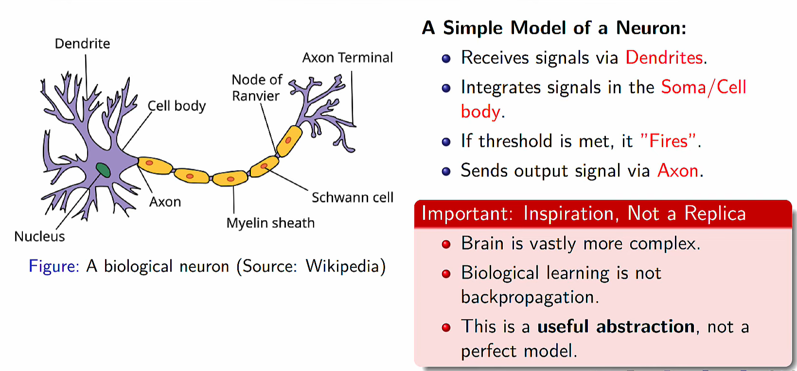
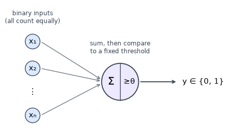
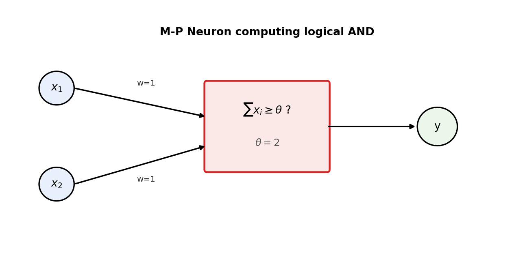
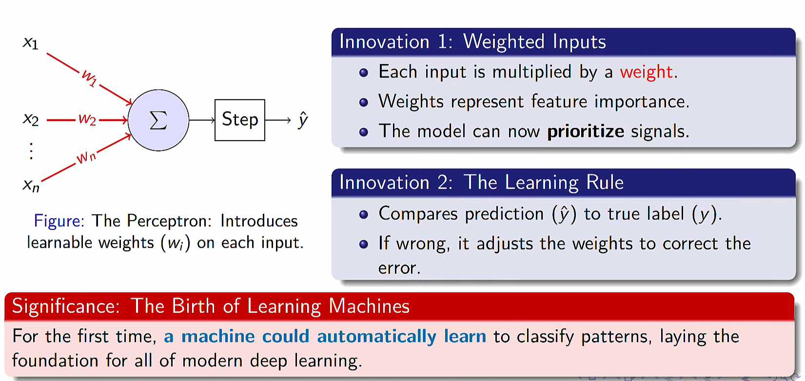
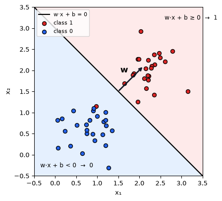
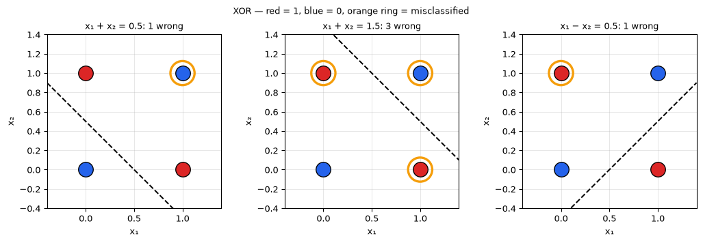
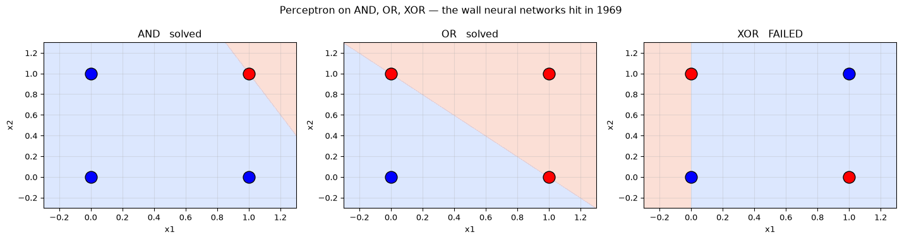

From Biology to the Perceptron
The origin story of the neural network. Real neurons in your brain → the first mathematical model in 1943 → Rosenblatt's Perceptron in 1958 → the XOR failure that killed neural network research for decades. Everything from here onwards is trying to fix the XOR problem.
01 The biological neuron
The wetware inspiration. Not a replica, an abstraction.

The four parts you need to know
- Dendrites — branching input structures. Receive signals from thousands of other neurons.
- Soma (cell body) — the integrator. Sums up incoming signals.
- Axon — the output cable. Long single fibre.
- Axon terminals — where the signal leaves, forming synapses with the dendrites of downstream neurons.
How it fires
Signals arriving at dendrites accumulate in the soma. If the total excitation crosses a threshold, the neuron fires — sending a voltage spike down the axon to every downstream neuron it's connected to. Otherwise it stays quiet.
That's it: sum inputs, compare to threshold, fire or don't. The behaviour of a neuron is roughly all-or-nothing.
Inspiration, not a replica
Two important disclaimers before we move on:
- Real neurons are vastly more complex. Continuous membrane voltages, ion channels, neurotransmitter dynamics, spike timing. The math model throws all of that away.
- Biological learning is not backpropagation. The brain doesn't use gradient descent. We use it because it works on silicon, not because it's biologically plausible.
The neural-network abstraction is useful, not true. That's a strong enough claim to build the entire field on.
02 The McCulloch-Pitts (M-P) neuron
The first mathematical model of a neuron. McCulloch & Pitts, 1943 — before "artificial intelligence" was even a phrase.

Python code for this figure
import matplotlib.pyplot as plt
from matplotlib.patches import Circle
fig, ax = plt.subplots(figsize=(7, 3.4))
xs = [("x₁", 1.2), ("x₂", 0.4), ("⋮", -0.3), ("xₙ", -1.0)]
for name, y in xs:
if name != "⋮":
ax.add_patch(Circle((0, y), 0.22, fc="#dbeafe", ec="#374151"))
ax.annotate("", (2.05, 0.05 * y), (0.24, y), arrowprops=dict(arrowstyle="->", color="#6b7280"))
ax.text(0, y, name, ha="center", va="center", fontsize=11)
ax.add_patch(Circle((2.6, 0), 0.55, fc="#ede9fe", ec="#374151", lw=1.4))
ax.plot([2.6, 2.6], [-0.55, 0.55], color="#374151", lw=1)
ax.text(2.33, 0, "Σ", ha="center", va="center", fontsize=16)
ax.text(2.87, 0, "≥θ", ha="center", va="center", fontsize=11)
ax.annotate("", (4.3, 0), (3.17, 0), arrowprops=dict(arrowstyle="->", color="#374151", lw=1.4))
ax.text(4.45, 0, "y ∈ {0, 1}", va="center", fontsize=11)
ax.text(0, 1.75, "binary inputs\n(all count equally)", ha="center", fontsize=9, color="#374151")
ax.text(2.6, 0.85, "sum, then compare\nto a fixed threshold", ha="center", fontsize=9, color="#374151")
ax.set_xlim(-0.6, 5.6); ax.set_ylim(-1.5, 2.3); ax.set_aspect("equal"); ax.axis("off")
plt.show()The definition
Given n binary inputs x_1, x_2, \ldots, x_n \in \{0, 1\} and a fixed threshold \theta:
No weights. Every input contributes equally. The only knob is the threshold \theta.
Building logic gates with M-P neurons

- AND: threshold \theta = n. Fires only when every input is 1.
- OR: threshold \theta = 1. Fires when any input is 1.
- NOT: needs inhibitory inputs (M-P allowed those too — negative connections that veto the neuron).
Why it mattered historically
McCulloch and Pitts proved that networks of these binary threshold units could compute any Boolean function — any logic gate, any combination of them. This was the seed idea that eventually became "neural networks can approximate any function".
But it was a purely theoretical result. Nothing in the M-P model said how to learn the connections. You had to design the network by hand.
03 Limitations of the M-P neuron
The M-P model was elegant but crippled by four problems:
- No learning. You set the threshold and connections by hand. Nothing adjusts them from data.
- Binary inputs only. No way to feed real-valued measurements (weight, temperature, pixel intensity).
- All inputs weighted equally. In real problems some inputs matter more than others.
- Hard threshold. Not differentiable — no gradient to follow.
The Perceptron fixes problems 1, 2, and 3. Modern neurons fix all four.
04 From M-P to the Perceptron
Frank Rosenblatt, 1958 — the first neural network that could learn from data.

What changed
The Perceptron kept the "sum and threshold" idea, but generalised it:
Three things are new:
- Real-valued inputs x_i \in \mathbb{R} (not just 0/1).
- Learnable weights w_i \in \mathbb{R} — each input has its own strength.
- Learnable bias b \in \mathbb{R} — a threshold you don't have to pick by hand.
The geometric view

Python code for this figure
import numpy as np
import matplotlib.pyplot as plt
rng = np.random.default_rng(1)
pos = rng.normal([2.2, 2.0], 0.45, (25, 2)); neg = rng.normal([0.8, 0.7], 0.45, (25, 2))
w, b = np.array([1.0, 1.0]), -3.0 # the line x1 + x2 = 3
fig, ax = plt.subplots(figsize=(5.6, 4.6))
xx, yy = np.meshgrid(np.linspace(-0.5, 3.5, 300), np.linspace(-0.5, 3.5, 300))
ax.contourf(xx, yy, (w[0] * xx + w[1] * yy + b >= 0), levels=[-0.5, 0.5, 1.5], colors=["#dbeafe", "#fee2e2"], alpha=0.7)
ax.plot([-0.5, 3.5], [3.5, -0.5], "k-", lw=1.6, label="w·x + b = 0")
ax.scatter(*pos.T, c="#dc2626", edgecolors="k", label="class 1")
ax.scatter(*neg.T, c="#2563eb", edgecolors="k", label="class 0")
ax.annotate("", (2.1, 2.1), (1.5, 1.5), arrowprops=dict(arrowstyle="->", lw=2, color="#111827"))
ax.text(1.55, 1.95, "w", fontsize=13, weight="bold")
ax.text(2.6, 3.2, "w·x + b ≥ 0 → 1", fontsize=9); ax.text(-0.35, -0.3, "w·x + b < 0 → 0", fontsize=9)
ax.set_xlim(-0.5, 3.5); ax.set_ylim(-0.5, 3.5); ax.set_xlabel("x₁"); ax.set_ylabel("x₂")
ax.legend(loc="upper left", fontsize=8); ax.set_aspect("equal")
plt.show()Everything the perceptron does is captured by one picture:
is the equation of a hyperplane — a line in 2D, a plane in 3D, and generally an (n-1)-dimensional flat sheet in n dimensions. Points on one side get classified 1; points on the other side get 0.
Training a perceptron = rotating and shifting that hyperplane until it separates the classes.
Why this was a big deal
For the first time, a machine could learn to classify inputs. You showed it examples; it adjusted its weights; eventually it got them right. The 1958 press hailed it as the first step toward machines that "walk, talk, see, write, reproduce themselves, and be conscious of their existence."
We got carried away. But the basic learning algorithm is real, and every deep network trained today is a descendant of it.
05 The Perceptron learning rule
How the weights actually change during training. Simple enough to do by hand.
The rule
For each training example (\mathbf{x}, y_{\text{true}}):
- Compute prediction \hat{y} = \text{step}(\mathbf{w} \cdot \mathbf{x} + b).
- If \hat{y} = y_{\text{true}} → do nothing.
- If \hat{y} \neq y_{\text{true}} → update:
where \eta > 0 is the learning rate — a small positive constant (often 1 in classical perceptron work).
Why the rule works — intuition
- If you predicted
0when the answer was1, the term (y_{\text{true}} - \hat{y}) = +1. The update adds \mathbf{x} to \mathbf{w} — pulling the hyperplane toward this example, making it more likely to fire next time. - If you predicted
1when the answer was0, the term (y_{\text{true}} - \hat{y}) = -1. The update subtracts \mathbf{x} from \mathbf{w} — pushing the hyperplane away from this example.
Correctness is a fixed point: predict right → no change.
Contrast with modern gradient descent
The Perceptron rule is a special case of stochastic gradient descent on the "perceptron loss" (a specific choice of loss function). It converges in a small number of passes when the data is separable but doesn't offer anything smooth to differentiate — that's what modern neurons use activation functions and cross-entropy for.
06 Perceptron Convergence Theorem
The formal guarantee that made the perceptron respectable.
The statement
If the training data is linearly separable, the perceptron learning rule will find a separating hyperplane in a finite number of updates.
That's a strong guarantee: not "usually", not "with high probability", but provably in finite time.
The two words that matter
- "linearly separable" — there must exist some hyperplane that perfectly separates positive from negative examples. If no such hyperplane exists, the theorem says nothing.
- "finite" — the bound depends on the geometry of the data (margin, radius). The exact bound is O(R^2 / \gamma^2) updates where R is the largest input norm and \gamma is the margin of the true separator. Big margin → fast convergence.
What happens on non-separable data
The perceptron cycles forever, never settling. There is no built-in "give up" heuristic — you add one yourself (max iterations, or switch to a soft classifier).
The big caveat
The theorem only helps you when the data is separable. Most interesting real-world problems aren't linearly separable — including XOR, up next. That's the wall the field hit.
07 The XOR problem — where the perceptron breaks
The 4-example dataset that stopped the field for 15 years.
What XOR is
The XOR (exclusive OR) truth table:
| x_1 | x_2 | y |
|---|---|---|
| 0 | 0 | 0 |
| 0 | 1 | 1 |
| 1 | 0 | 1 |
| 1 | 1 | 0 |
The output is 1 if the inputs disagree, 0 if they agree.
Why it's impossible for a perceptron

Python code for this figure
import numpy as np
import matplotlib.pyplot as plt
X = np.array([[0, 0], [0, 1], [1, 0], [1, 1]]); y = np.array([0, 1, 1, 0])
fig, axes = plt.subplots(1, 3, figsize=(11, 3.6))
lines = [((1, 1), -0.5, "x₁ + x₂ = 0.5"), ((1, 1), -1.5, "x₁ + x₂ = 1.5"), ((1, -1), -0.5, "x₁ − x₂ = 0.5")]
for ax, (w, b, name) in zip(axes, lines):
pred = (X @ np.array(w) + b > 0).astype(int)
wrong = (pred != y).sum()
xs = np.linspace(-0.4, 1.4, 2)
ax.plot(xs, -(w[0] * xs + b) / w[1], "k--")
for (a, c), t, p in zip(X, y, pred):
ax.scatter(a, c, s=260, c="#dc2626" if t else "#2563eb", edgecolors="k", zorder=3)
if t != p:
ax.scatter(a, c, s=700, facecolors="none", edgecolors="#f59e0b", lw=2.5, zorder=4)
ax.set_title(f"{name}: {wrong} wrong", fontsize=10)
ax.set_xlim(-0.4, 1.4); ax.set_ylim(-0.4, 1.4); ax.set_aspect("equal"); ax.grid(alpha=0.3)
ax.set_xlabel("x₁"); ax.set_ylabel("x₂")
plt.suptitle("XOR — red = 1, blue = 0, orange ring = misclassified", fontsize=10)
plt.tight_layout(); plt.show()Plot the four XOR examples on 2D axes. The 1 points are at (0, 1) and (1, 0) — opposite corners. The 0 points are at (0, 0) and (1, 1) — the other diagonal.
No straight line can separate the diagonals. No matter how you rotate and shift the perceptron's hyperplane, you can always draw one that misclassifies at least one of the four points.
Because a perceptron is a hyperplane, XOR is fundamentally beyond its expressive power.
Minsky and Papert's book
Marvin Minsky and Seymour Papert's 1969 book Perceptrons proved formally that single-layer perceptrons could not solve XOR (or, more generally, any function that isn't linearly separable). The book was widely (and unfairly) read as "neural networks are a dead end".
Funding dried up. The field entered its first AI winter. Progress on neural networks stalled from ~1969 to the mid-1980s.
The fix — spoiler
The fix was already known in principle: stack perceptrons in layers. A "hidden" layer of perceptrons can carve the input space into pieces that a second perceptron can then combine linearly — enough to solve XOR.
What the field lacked in 1969 was:
- The learning algorithm (backpropagation — rediscovered/popularised in 1986).
- The compute (arrived much later).
Note 03 shows how the multi-layer perceptron actually solves XOR; note 07 shows how backpropagation makes it learn.
08 Runnable demo — perceptron on AND, OR, and (failing on) XOR
import numpy as np
import matplotlib.pyplot as plt
class Perceptron:
def __init__(self, n_features, lr=1.0):
self.w = np.zeros(n_features)
self.b = 0.0
self.lr = lr
def predict(self, X):
return (X @ self.w + self.b >= 0).astype(int)
def fit(self, X, y, epochs=20):
history = []
for epoch in range(epochs):
errors = 0
for xi, yi in zip(X, y):
y_pred = 1 if xi @ self.w + self.b >= 0 else 0
update = self.lr * (yi - y_pred)
if update != 0:
self.w += update * xi
self.b += update
errors += 1
history.append(errors)
if errors == 0: # early stop when converged
break
return history
# Truth tables for AND, OR, XOR
X = np.array([[0, 0], [0, 1], [1, 0], [1, 1]])
y_and = np.array([0, 0, 0, 1])
y_or = np.array([0, 1, 1, 1])
y_xor = np.array([0, 1, 1, 0])
print("Training a perceptron on three gates...\n")
for name, y in [('AND', y_and), ('OR', y_or), ('XOR', y_xor)]:
p = Perceptron(n_features=2)
hist = p.fit(X, y, epochs=50)
preds = p.predict(X)
print(f"{name:5s} epochs used: {len(hist):3d} final errors: {hist[-1]} "
f"preds: {preds.tolist()} truth: {y.tolist()} correct: {np.array_equal(preds, y)}")Training a perceptron on three gates... AND epochs used: 6 final errors: 0 preds: [0, 0, 0, 1] truth: [0, 0, 0, 1] correct: True OR epochs used: 4 final errors: 0 preds: [0, 1, 1, 1] truth: [0, 1, 1, 1] correct: True XOR epochs used: 50 final errors: 4 preds: [1, 1, 0, 0] truth: [0, 1, 1, 0] correct: False
Visualise all three
fig, axes = plt.subplots(1, 3, figsize=(15, 4))
for ax, name, y in zip(axes, ['AND', 'OR', 'XOR'], [y_and, y_or, y_xor]):
p = Perceptron(n_features=2)
p.fit(X, y, epochs=50)
# Decision boundary grid
xx, yy = np.meshgrid(np.linspace(-0.3, 1.3, 200), np.linspace(-0.3, 1.3, 200))
Z = p.predict(np.c_[xx.ravel(), yy.ravel()]).reshape(xx.shape)
ax.contourf(xx, yy, Z, alpha=0.3, cmap='coolwarm', levels=[-0.5, 0.5, 1.5])
# Data points
for xi, yi in zip(X, y):
ax.scatter(*xi, c='red' if yi == 1 else 'blue', s=200, edgecolors='k', zorder=5)
correct = np.array_equal(p.predict(X), y)
ax.set_title(f'{name} {"solved" if correct else "FAILED"}')
ax.set_xlabel('x1'); ax.set_ylabel('x2')
ax.grid(alpha=0.3); ax.set_xlim(-0.3, 1.3); ax.set_ylim(-0.3, 1.3)
plt.suptitle('Perceptron on AND, OR, XOR — the wall neural networks hit in 1969')
plt.tight_layout(); plt.show()
What just happened
AND and OR — linearly separable. The perceptron finds a line, done.
XOR — no line works. The perceptron keeps trying forever (we cut it off at 50 epochs), predicting the same wrong answers over and over.
The fix — a hidden layer — is the whole point of note 03.